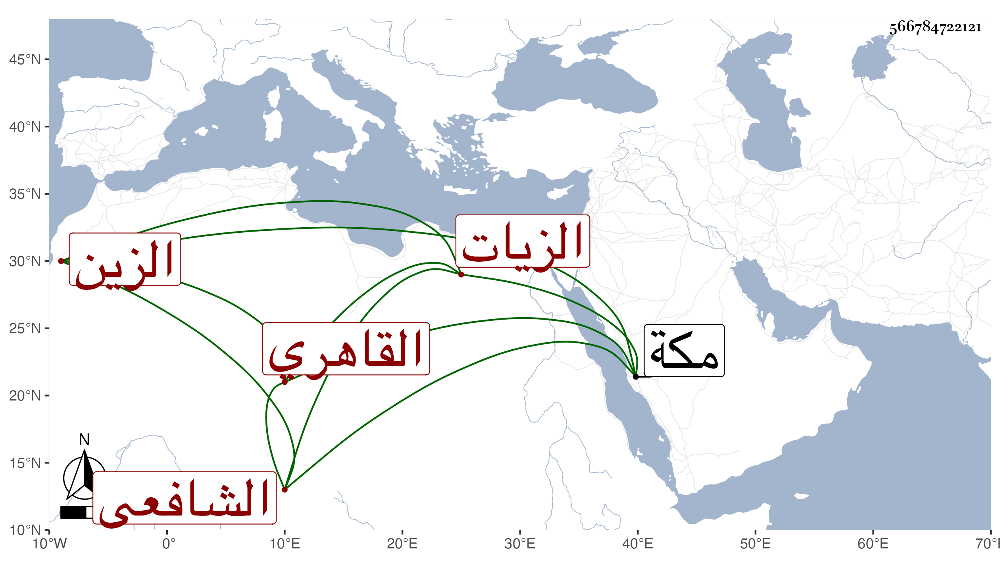

0902Sakhawi.DawLamic.ITO20230111-ara1.EIS1600.566784722121
Biography ID: 566784722121
734
عبد القادر بن علي بن شعبان الزين القاهري الشافعي الزيات أبوه ويعرف بابن شعبان . ولد في سنة عشرين وثمانمائة بسوق الغنم ونشأ فحفظ القرآن والتنبيه وأخذ الفرائض والحساب عن ابن المجدي وأحمد الخواص ، وجاور بمكة في سنة إحدى وخمسين فأخذ عن أبي الفتح المراغي شرحه للمنهاج وسمع عليه أشياء وكذا أخذ في الفقه أيضا عن الجمال الأمشاطي في آخرين منهم القاياتي في الفقه وأصوله يسيرا وأبو الفضل المغربي في الأصلين والمعاني والبيان عن ابن حسان وفي المطول عن الشمني وفي التحرير عن مؤلفه ابن الهمام وغير ذلك رفيقا في أكثره للبرهاني بن ظهيرة وعظم اختصاصه به واشتهر به عند الملك فمن دونه وانتفع كل منهما بالآخر وأم بجامع أصلم وتكسب بالشهادة هناك وتميز في الفرائض والحساب ، وشارك في الفضائل وكتب علي الحاوي لأبن الهائم في الحساب شرحا وكذا على الياسمينية وهو مختصر في دون كراستين واختصر شرح ابن المجدي للجعبرية وأقرأ الطلبة وتردد إلي كثيرا وأظنه ممن أخذ عن شيخنا وعرف بالهمة والمروءة سيما مع صاحبه ولم يلبث بعده الا يسيرا . ومات في ليلة الخميس عاشر ربيع الثاني سنة اثنتين وتسعين رحمه الله وإيانا .
